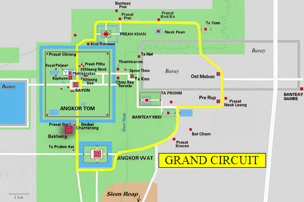

ទីតាំងភូមិសាស្រ្ត
ប្រាសាទបាយ័នមានទីតាំងស្ថិតនៅចំកណ្តាលនៃរាជធានីអង្គរធំ បច្ចុប្បន្នខេត្តសៀមរាប។ ប្រាសាទនេះកសាងនៅចុងសតវត្សរ៍ទី ១២ និងដើមសតវត្សរ៍ទី ១៣ ដោយព្រះបាទជ័យវរ្ម័នទី៧។ ប្រាសាទនេះមាន តួប៉មនីមួយៗ មានមុខបួន ដែលមានកំពូល ៤៩ និងកំពូលក្លោងទ្វារចូល៥ ទៀត សរុបទាំងអស់ ៥៤ កំពូល ដែលតំណាងឲ្យខេត្តក្រុងខ្មែរ ទាំង ៥៤ នៅសម័យកាលនោះ។ មានអ្នកប្រាជ្ញមួយចំនួនបានគិតថា មុខទាំង ៤ នោះតំណាងឲ្យព្រះពោធិសត្វលោកេស្វរៈនៃព្រះពុទ្ធសាសនាមហាយាន អ្នកខ្លះទៀត គិតថា ជារូបតំណាងព្រះបាទជ័យវរ្ម័នទី៧។ ប្រាសាទបាយ័នមានប្លង់បីជាន់។ ជាន់ទី១ និងទី ២ មានថែវដែលមានចម្លាក់ដ៏ល្អវិចិត្រ។ ប្រាង្គនៅកណ្តាល ១៦ និងស្ថិតនៅជាន់ទី ៣ មានរាងកាកបាទ។ សំណង់ប្រាសាទបាយ័នមានលក្ខណៈស្មុគស្មាញ ទាំងថែវ ផ្លូវដើរ និងជណ្តើរ។ ក្រៅពីទឹកមុខញញឹមនៃរូបបាយ័ន ប្រាសាទនេះមានចម្លាក់ដ៏ល្អប្រណីត ដែលរៀបរាប់ពីរឿងទេវកថានៅថែវខាងក្នុង និងខាងក្រៅ រៀបរាប់ពីជីវភាពរស់នៅរបស់ប្រជាជននៅសម័យអង្គរ មានទាំងផ្សារ ការនេសាទ ពិធីបុណ្យ ល្បែងប្រដាល់ ជល់មាន់ ។ល។ និងថែមទាំងមានការរៀបរាប់ពីព្រឹត្តិការណ៍ប្រវត្តិសាស្រ្តចម្បាំង និងព្យុហយាត្រាជាដើម។ ចម្លាក់នោះឆ្លាក់បានជ្រៅជាងនៅ ប្រាសាទអង្គរវត្ត តែមានលក្ខណៈសាមញ្ញ។ ទិដ្ឋភាពនៃចម្លាក់ បង្ហាញដោយផ្ទាំងតាមជួរ ពីរឬបីជួរ។